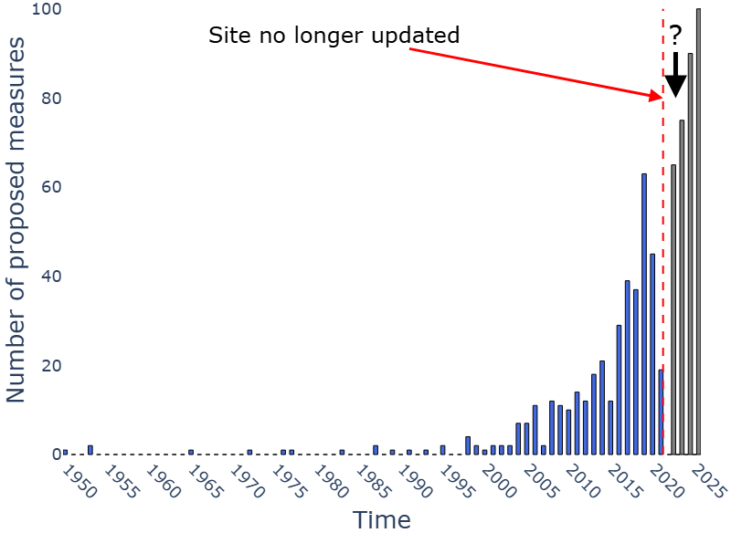

---
# You don't need to edit this file, it's empty on purpose.
# Edit theme's home layout instead if you wanna make some changes
# See: https://jekyllrb.com/docs/themes/#overriding-theme-defaults
layout: single
author_profile: false
permalink: /
---
Welcome to Zoo of Centralities
A continually updated encyclopedia of centrality measures in complex networks
Why Zoo of Centralities is needed?
The study of centrality has evolved rapidly. Over the years, scientists have introduced an enormous number of centrality metrics, creating a zoo of diverse and distinct approaches.

But despite the richness of this field, we noticed a problem:
Key measures are scattered across papers and toolkits
Definitions can be confusing or inconsistent
Side-by-side comparisons are rare
And new learners often ask: “Which centrality should I use—and why?”
We built CentralityZoo to answer that question, organize the space, and make learning clear, visual, and accessible.
🧭 What Is Centrality?
Centrality metrics attempt to capture how important or influential a node is within the structure of a network. Each metric reflects a different idea of what “importance” means:
🧍 Degree Centrality – Who has the most direct connections?
🧠 Eigenvector Centrality – Who is connected to the well-connected?
🔗 Closeness Centrality – Who can reach others most efficiently?
🧬 Betweenness Centrality – Who sits on the most paths?
📦 PageRank – Who has prestige based on network structure?
🐾 Why “Zoo”?
Because this is a collection—a curated, growing exhibit of the diverse “species” of centrality.
CentralityZoo is a community resource—open, evolving, and built with care.
Want to contribute a new metric, suggest a use case, or improve what’s here?